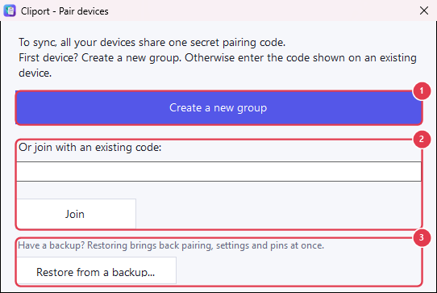
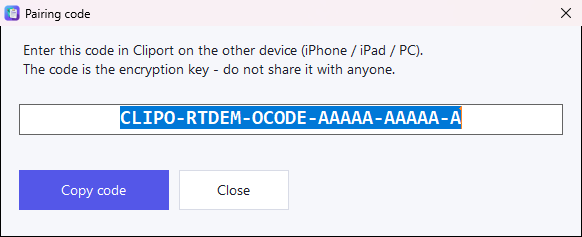
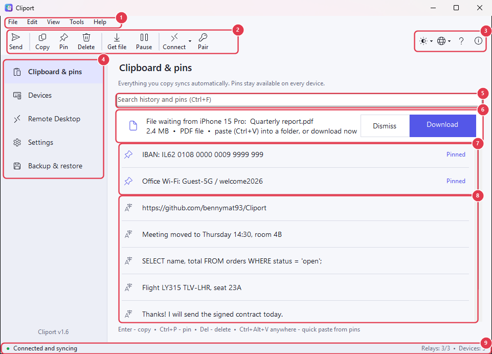
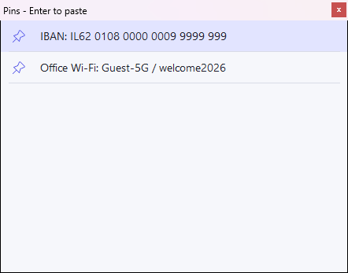
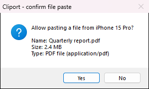
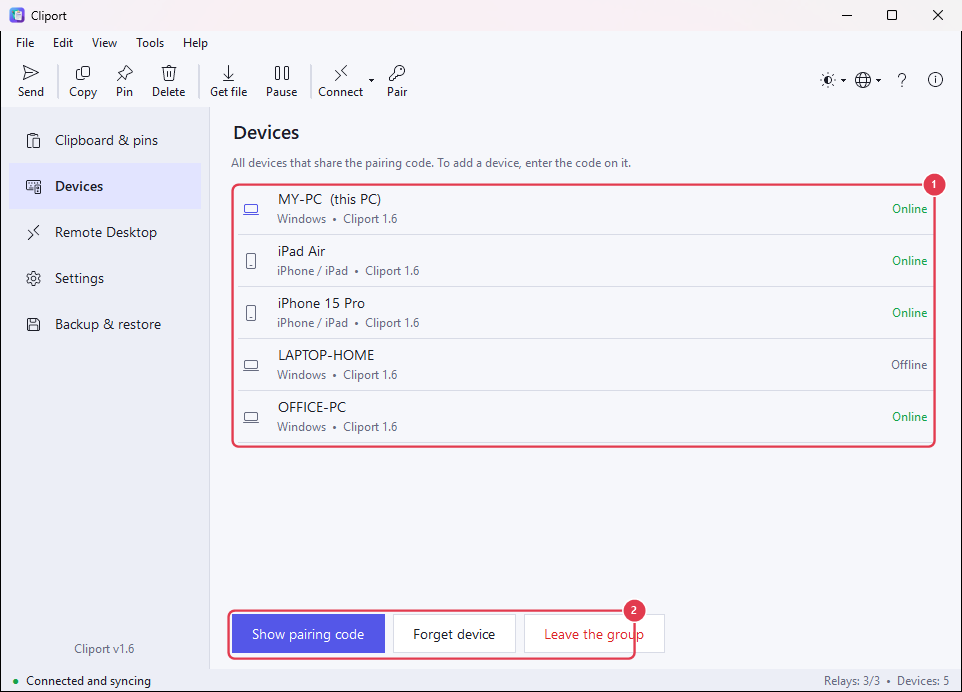
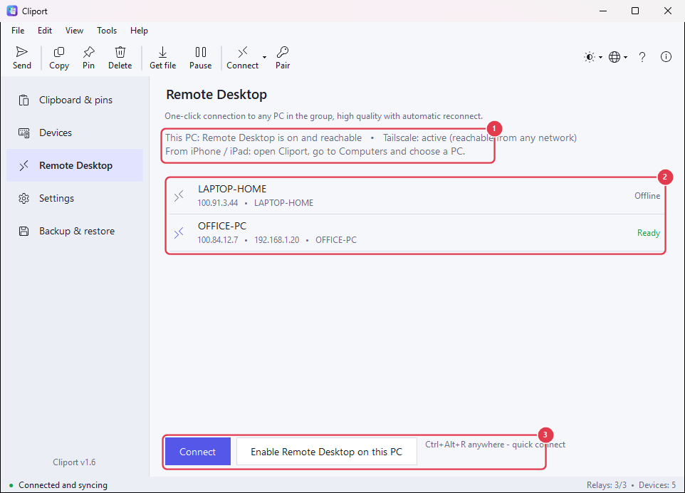
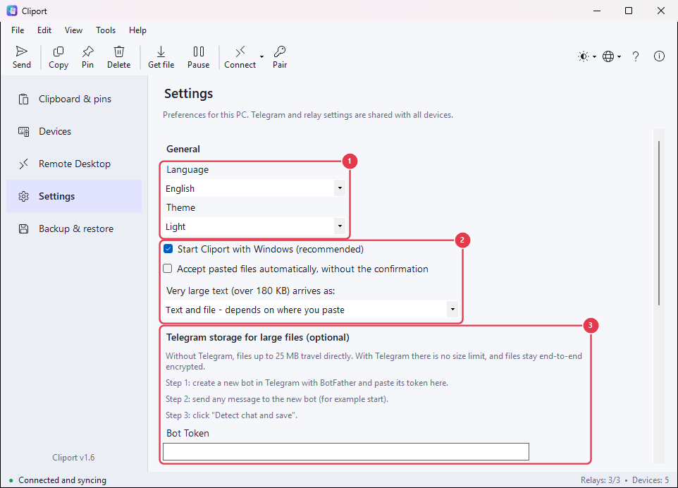
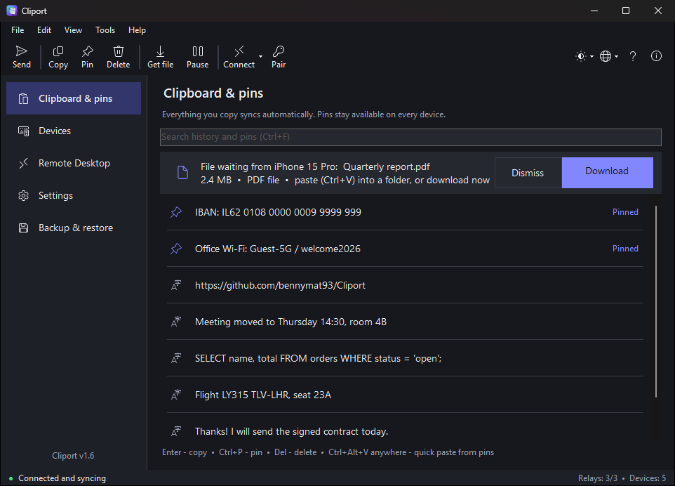
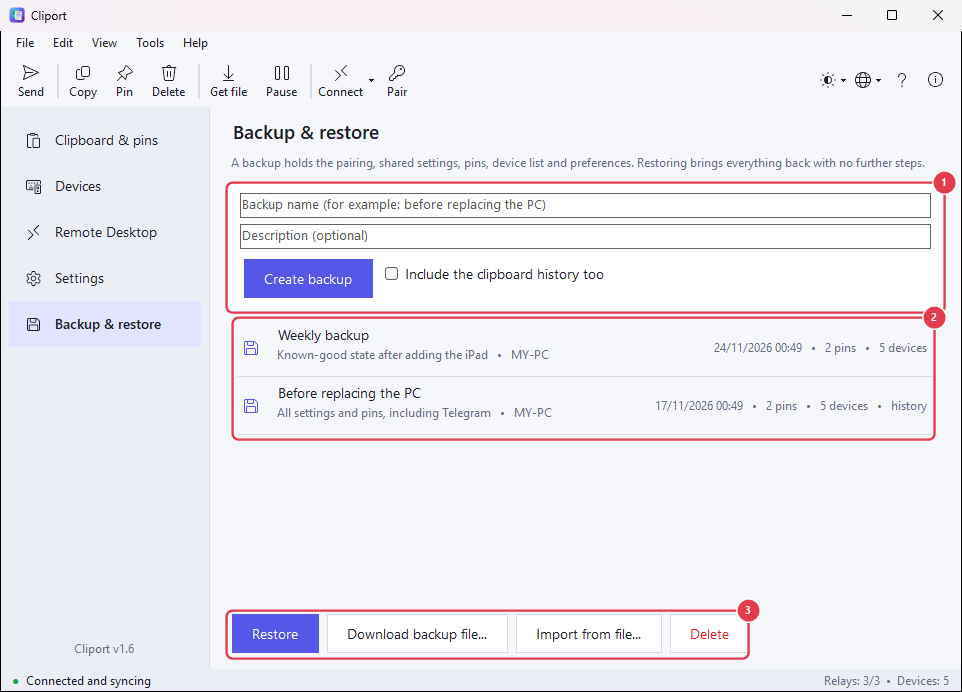

Cliport
A real-time shared clipboard for PCs, iPhone and iPad
User guide · Version 1.0
Contents
- What Cliport does
- Installing and pairing on a PC
- The main window
- Copy and paste between devices
- Pins
- Sharing files
- Devices
- Remote Desktop
- Settings, language and theme
- Backup and restore
- iPhone and iPad
- Recovering from problems
- Keyboard shortcuts
- Privacy and security
- Troubleshooting
- Android, Mac and Linux: the web client
1. What Cliport does
Cliport connects the clipboard of all your devices. Copy on one device and paste on another, with no extra step.
- Real-time sync of text and images between Windows PCs, iPhone and iPad.
- Works from any network. The devices do not need to share a network; an internet connection is enough.
- Pins: fixed items that are always available on every device.
- File sharing: copy a file on one device and paste it on another, after you approve it.
- Remote Desktop: one-click connection to any PC in the group.
- End-to-end encryption: only your devices can read the content.
2. Installing and pairing on a PC
Download one of two files from the project's downloads page: Cliport-v2.0-Setup.exe installs the program for the current user (no administrator rights) and adds shortcuts, and Cliport-v2.0-portable.exe runs without installation. Either way the program stays active in the system tray (next to the clock).

- Create a new group - on the first device. A secret 26-character pairing code is created.
- Join with an existing code - on every other device. Enter the code shown on the first device and click "Join".
- Restore from a backup - if you have a backup file, restoring brings back pairing, settings and pins at once.
After pairing, the code is shown. Keep it somewhere safe: it is used to add devices, and it is also the encryption key.

3. The main window
Open the window by double-clicking the Cliport icon in the system tray. Closing the window does not stop sync.

- Menu bar - File, Edit, View, Tools and Help. Every action is here, with its keyboard shortcut.
- Toolbar - the common actions: send clipboard, copy, pin, delete, get file, pause, connect to a PC and pairing code.
- View and help - theme, language, user guide and About.
- Navigation - switch between the five pages: Clipboard & pins, Devices, Remote Desktop, Settings, Backup & restore.
- Search - filters history and pins as you type.
- Pending file - appears when another device copied a file. Shows its name, size and type.
- Pins - always shown at the top of the list.
- History - the most recent items copied on any device.
- Status bar - connection state, number of active relays and number of devices.
4. Copy and paste between devices
There is nothing to learn: copy as usual (Ctrl+C) on one device and paste as usual (Ctrl+V) on another. The copy reaches your other devices in about a second.
- Double-clicking an item in the list (or Enter) copies it again to all devices.
- The Send button re-sends whatever is on the clipboard right now.
- The Pause button stops sync temporarily, for example before copying something sensitive.
- Content that password managers mark as private is not sent.
- Very large text (over 180 KB) arrives both as text and as a file: pasting into a program gives the text, pasting into a folder gives a text file. In Settings you can choose text only or file only.
5. Pins
A pinned item stays available on every device until you unpin it. Good for addresses, account numbers, canned replies and the like.
- To pin: select an item and click Pin (Ctrl+P). Click again to unpin.
- To paste quickly in any program: Ctrl+Alt+V, choose an item and press Enter.

6. Sharing files
Copy a file on one device as usual. Your other devices show a notice with the file's name, size and type. The file itself does not travel until you approve it.
- On the destination PC, open a folder and press Ctrl+V.
- A confirmation window opens with the file details.
- After you approve, the file is downloaded and pasted into the folder.

- You can also click Download now in the main window and then paste in any program.
- Files up to 25 MB travel directly. For larger files, set up Telegram storage (see Settings). Once set up, files over 4 MB go through it.
- A copied folder is sent as a zip file (up to 500 MB).
- On a weak network, lost pieces are re-sent automatically and the pace adapts.
- The device the file was copied on must be online when you paste.
7. Devices

- Device list - every device in the group and its connection state.
- Actions - show the pairing code to add a device, remove a device from the list, or disconnect this PC from the group.
8. Remote Desktop
Cliport publishes each PC's addresses to the group (encrypted), so you can connect to it with one click.

- This PC's state - whether Remote Desktop is on, and whether Tailscale was detected.
- PCs in the group - double-click to connect. Cliport picks the reachable address by itself.
- Actions - connect, and enable Remote Desktop on this PC (needs administrator approval and Windows Pro).
- Quick connect from anywhere: Ctrl+Alt+R.
- To connect across different networks, install Tailscale (free) on all devices and sign in to the same account.
- The connection uses Windows Remote Desktop, at full quality and with automatic reconnect.
9. Settings, language and theme

- Language and theme - Hebrew or English; light, dark, or "Device" (follows the Windows setting).
- Start-up, approval and large text - start with Windows, automatic approval of pasted files, and how very large text arrives.
- Telegram storage - optional, for files over 25 MB. Set it up once and it is shared with all devices.

Further down the page you can set a private relay server (MQTT over TLS). It is added to the public relays and improves availability.
10. Backup and restore
A backup keeps the whole configuration: the pairing, Telegram and relay settings, pins, the device list and your preferences. Restoring on a new installation brings the tool back to full function, with nothing else to enter.

- New backup - give it a name, add a description if you like, and click "Create backup". You can include the clipboard history too.
- Local backups - kept inside the tool, encrypted under your Windows user account. Each shows its description, date and what it contains.
- Actions - restore the selected backup, download a backup file, import from a file, and delete.
- Download a file: a file with the extension .clipbak is saved. It contains your group's encryption key, so protecting it with a password is recommended.
- Restoring on a new installation: in the pairing window click "Restore from a backup..." and choose the file. The device joins the group and starts syncing at once.
- Before every restore the current state is saved automatically as a backup, so you can go back.
- An automatic backup is made once a day, and the newest five are kept.
- The same backup file works on a PC, an iPhone and an iPad.
- Shortcuts: Ctrl+B creates a backup, Ctrl+O imports a file.
11. iPhone and iPad
Installing and pairing
- Install Cliport-v2.0-unsigned.ipa with the tool you use for unsigned apps.
- Open Cliport, enter the pairing code and tap "Join with this code".
- Allow notifications.
From the PC to the device
Automatic while Cliport is open. When the app is in the background, iOS may block writing to the clipboard: the item is kept, a silent notification appears, and it lands on the clipboard the moment you open Cliport (tapping the notification is enough). The notification can be turned off in Settings.
If something was copied both on this device and on another one while Cliport was closed, the app asks which item is newer and never overwrites either without asking.
Floating window: fully automatic sync (experimental)
In Settings, "Floating window when leaving the app". When you leave Cliport a small floating window opens, and while it is shown iOS treats Cliport as an on-screen app: what you copy on the device is sent at once, and what arrives from a PC lands on the clipboard, without opening the app. Drag the window to the screen edge to hide it. To stop iOS asking every time, set the device Settings, Cliport, "Paste from Other Apps" to Allow.
From the device to the PC
iOS does not let any app read the clipboard in the background. There are three ways around it:
- Opening Cliport sends the clipboard right away.
- An automation in the Shortcuts app: new Automation, "App", "Is Closed", "Run Immediately". Add the action "Get Clipboard" followed by Cliport's "Send text to all devices". From then on, leaving an app sends the clipboard.
- Back Tap or the Action Button: assign a shortcut with the same two actions.
Files
When another device offers a file, a notification shows its name, size and type. After you approve, the file goes to the clipboard and is also saved in the Files app, in the Cliport folder.
Remote Desktop
On the Computers tab, choose a PC and an address. The connection opens in Microsoft's Windows App (free on the App Store).
Language and theme
On the Settings tab, under Appearance: Hebrew or English; Light, Device or Dark.
Backup and restore
On the Settings tab, open "Backup & restore". Create a backup with a name and description, download a file (with a password if you like), import a file, or restore a local backup. On a new installation you can restore straight from the pairing screen.
12. Recovering from problems
Cliport repairs itself in levels. Each level shows a notification.
| Level | What happens |
|---|---|
| 0 | A dropped connection reconnects by itself, and a stuck one is replaced. On a network change, reconnection is immediate. |
| 1 | After a crash or a hang, the program restarts automatically. |
| 2 | On repeated crashes, the cache and history are reset. |
| 3 | Settings are rebuilt. Pairing is kept. |
| 4 | Safe mode: basic sync only, until the problem is resolved. |
On iPhone and iPad the system does not allow an app to restart itself, so if the app stops a notification appears, and tapping it resumes sync.
13. Keyboard shortcuts
| Shortcut | Action |
|---|---|
| Ctrl+Alt+V | Quick paste from pins (in any program) |
| Ctrl+Alt+R | Quick Remote Desktop connect (in any program) |
| Enter | Copy the selected item to all devices |
| Ctrl+P | Pin / unpin |
| Del | Delete from history |
| Ctrl+F | Search |
| Ctrl+Shift+V | Send the clipboard now |
| Ctrl+D | Download the pending file |
| Ctrl+K | Show the pairing code |
| Ctrl+B | Create a backup |
| Ctrl+O | Import a backup file |
| Ctrl+1 to Ctrl+5 | Switch pages |
| F1 | This guide |
14. Privacy and security
- All content is encrypted on the device before it is sent (AES-256) and authenticated (HMAC-SHA256). The relay servers see only ciphertext.
- The pairing code is the encryption key. Anyone who has it can join the group, so do not share it.
- On a PC, the code, history and pins are stored encrypted under your Windows user account.
- If the code leaks: leave the group on every device and create a new group.
- A backup file contains the code. Keep it somewhere safe and protect it with a password.
15. Troubleshooting
| Symptom | What to check |
|---|---|
| A copy does not reach another device | Does the status bar say "Connected and syncing" on both devices? Is sync paused? Do both devices use the same pairing code? |
| "Reconnecting..." for a long time | Is there an internet connection? Corporate networks sometimes block port 8883; in that case set up a private relay server. |
| Pasting a file does not work | Is the source device online? Is the file under 25 MB, or is Telegram storage set up? |
| Remote Desktop does not connect | Is Remote Desktop enabled on the target PC? Is Tailscale running on both sides? |
| A copy on the iPhone is not sent | Open Cliport, or set up the automation described in section 11. |
16. Android, Mac and Linux: the web client
Any device with a current browser can join the group without installing anything. Open bennymat93.github.io/Cliport, enter the pairing code and name the device.
- Receiving: what is copied on the other devices appears on the page, and lands on the clipboard while the page is in front. Every item has a "Copy" button.
- Sending: type or paste into the box and press "Send", or press "Send clipboard". You can also turn on automatic sending of the clipboard whenever you return to the page.
- Pins and files: pins sync as usual. Files up to 25 MB are sent and received, with a "Download" button.
- Privacy: the code is kept in the browser only, and content is end-to-end encrypted exactly as in the apps.
- Limit: sync runs only while the page is open. Browsers do not allow clipboard access in the background.
The activity log is in the data folder (Tools menu, "Open data folder and log"). "Collect diagnostic logs from all devices" in the same menu also brings the logs of the other connected devices to this PC, into the diag folder. Logs never contain clipboard content.
Project page: github.com/bennymat93/Cliport